Scanpy Curated Workflow
Nida Pervaiz, Irzam Sarfraz
Source:vignettes/articles/scanpy_curated_workflow.Rmd
scanpy_curated_workflow.RmdIntroduction
The singleCellTK package integrates functions from Scanpy which is a scalable Python-based toolkit for analyzing single-cell gene expression data built on top of the AnnData framework to store data and results. It includes functions for finding variable genes, dimensionality reduction, clustering, and differential expression. The Python-based implementation efficiently deals with datasets of more than one million cells.
Users can assess the Scanpy workflow via the singleCellTK package using either the R console or interactive graphical user interface (GUI) built with R/Shiny. The singleCellTK package uses the SingleCellExperiment object to store data and results. The Scanpy wrapper functions in singleCellTK automatically convert the data and results back and forth between SCE and AnnData objects so users do not have to do this manually.
The Shiny app allows users to access Scanpy functions and workflows without having to know the underlying code. Users can access all functions in the a la carte workflow in combination with functions from other packages. The Shiny app also contains a curated workflow that lets the users run the steps of the complete Scanpy workflow in a sequential manner and display the results with interactive plots.
In this tutorial, you can select the ‘Interactive Analysis’ tabs below for detailed instructions on how to run the Scanpy workflow with the Shiny or the ‘Console Analysis’ tabs for instructions on running the workflow using the R console.
Note: This tutorial assumes that the data has already been imported, QC’ed, and filtered. Please see the Import and QC tutorial for more information.
Workflow Guide
In this tutorial example, we illustrate all the steps of the
Scanpy curated workflow and focus on the options
available to customize the individual steps per the Scanpy instructions. To start
the Scanpy curated workflow in the Shiny app, click on the
‘Curated Workflows’ tab in the top nagivation menu and select
Scanpy:
1. Normalize Data
The first major step in the
analysis is to normalize the raw counts for differences in overall
library size (i.e. total number of counts) and apply a log
transformation. For this purpose, any assay containing raw counts in the
uploaded data can be used. 1. Click on the ‘Normalize’ vertical tab. 2.
Select the assay to normalize from the dropdown menu. 3.
Modify optional parameters if necessary 4. Press the ‘Normalize’ button
to start the normalization process.
Note: The input raw counts matrix should only contained filtered cells and empty droplets should already have been removed. If you applied ambient RNA removal algorithms and want to use the decontominated counts, make sure to specify the appropriate matrix as input.
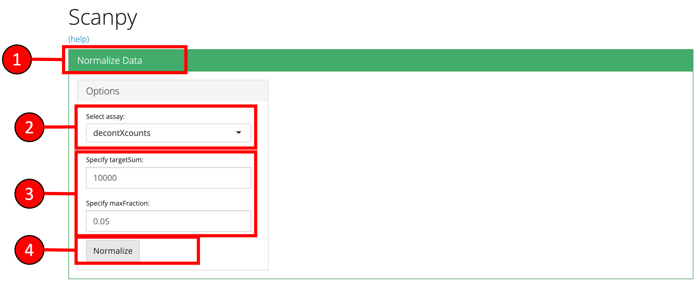
2. Highly Variable Genes
Identification and
selection of highly variable features/genes is important in the
Scanpy workflow to produce high quality clustering results.
Currently, Scanpy provides three methods for variable genes
identification (seurat, cell_ranger and
seurat_v3).
- Click on the ‘Highly Variable Genes’ vertical tab.
- Select method for computation of highly variable genes.
- Input the number of genes that should be identified as variable.
- Modify optional parameters if necessary.
- Press ‘Find HVG’ button to find the top highly variable genes.
- A plot is produced that displays the relationship between the mean and variability or disperson of each gene. Highly variable features will have higher levels of variability or dispersion regardless of the mean.
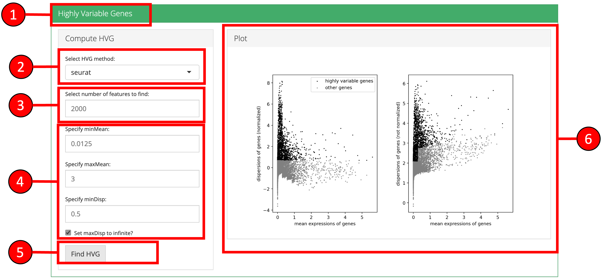
3. Dimensionality Reduction Scanpy
workflow offers PCA for dimensionality reduction. The
principal components (PCs) from PCA will be used in the downstream
clustering and 2-D embedding analyses. In the downstream analysis, you
will have to select the number of PCs to use. Several plots are
available for the user to inspect the output of the dimensionality
reduction and identify the appropriate number of PCs to use in the
downstream analyses.
- The ‘PCA Variance’ show the percentage of variability explained by each PC. This plot can be useful for selecting the number of PCs. In general, the “elbow” of the curve is a good selection criteria. The elbow is where there is a sharp drop in the amount the percentage of variance decreases after including additional PCs.
- The ‘PCA Plot’ can be used to view cells in the reduced dimensional space of PC1 versus PC2.
- The ‘PCA Gene Ranking’ plot shows the highest ranked genes for each PC.
- Click on the ‘Dimensionality Reduction’ vertical tab.
- Change the method for computation of PCA if desired.
- Input the total number of components to compute.
- Press the ‘Run PCA’ button to start processing.
- Select the number of PCs that should be used in the downstream clustering and 2D-Embedding analyses.
- The plot area from where all computed plots can be viewed by the user.
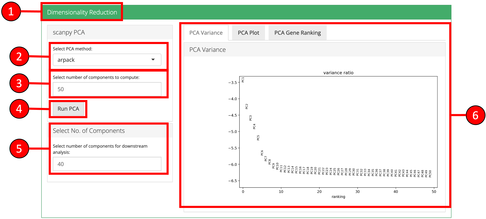
4. 2D-Embedding
The relationships between cells
can be viewed on 2-D scatter plots using embedding algorithms such as
‘UMAP’ and ‘tSNE’. In these plots, each point is a cell and cells with
more similar expression profiles will be closer together in the
plot.
- Click on the ‘2-D Embedding’ vertical tab.
- Select the ‘tSNE’ or ‘UMAP’ sub-tab.
- Change optional parameters if desired.
- Press ‘Run UMAP’ or ‘Run tSNE’ button to start processing.
- A 2D embedding scatter plot will be generated on the right.
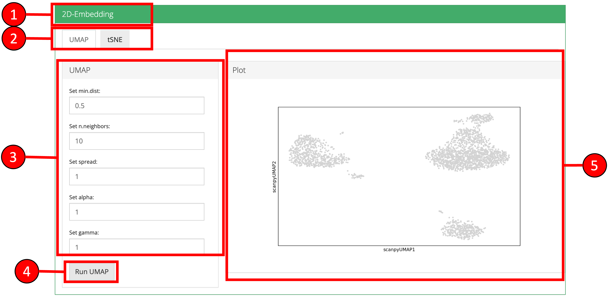
5. Clustering
Cells can be clustered using a
previously computed reduced dimensional object. Cluster labels will be
displaye on previously computed 2-D embedding or reduction plots.
- Click on the ‘Clustering’ vertical tab.
- Select clustering method.
- Set parameters.
- Press ‘Find Clusters’ button to start processing.
- Re-computed plots with cluster labels. Only those plots are available that have previously been computed.
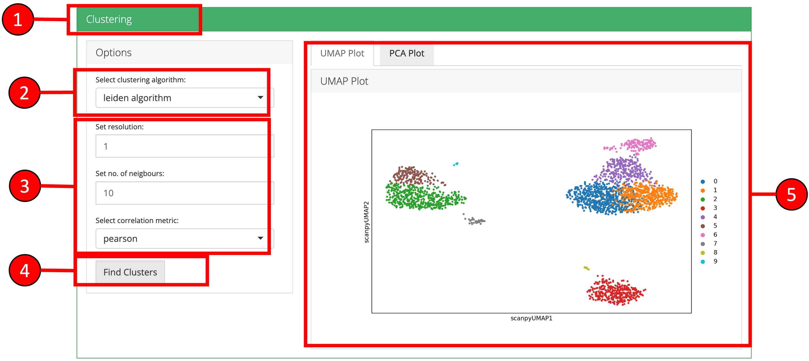
6. Find Markers
‘Find Markers’ tab can be used
to identify the marker genes that are enriched in each cluster or group.
Markers genes can be identified that are differentially expressed
between each cluster and all other cluster or between two selected
clusters/groups. Expression of individual marker genes can be visualized
in Dot plots, Violin plots, Matrix plots and via a Heatmap.
- Click on “Find Markers” vertical tab.
- Change parameters if desired and press “Find Markers”.
- Differentially expressed features will be displayed in the table on the right. Additional filters can be applied to further refine the list of differentially expressed genes. For example, specifying a log fold change cutoff in addition to an adjusted p-value cutoff can sometimes help identify better marker genes.
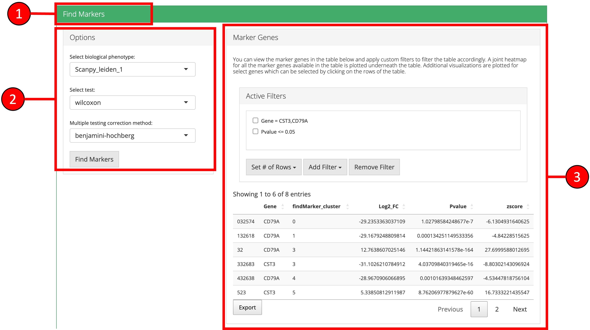
- A Heatmap plot of the top differentially expressed genes for each cluster/group can be used to visualize the patterns of expression within and across clusters/groups.

- Desired marker genes can be selected from the table (3) and clicking on these genes will generate feature plots at the bottom of the screen. Selecting marker genes this way can highlight particular clusters on a UMAP (feature plot) or other plots and can identify cell-types based on their respective marker genes.
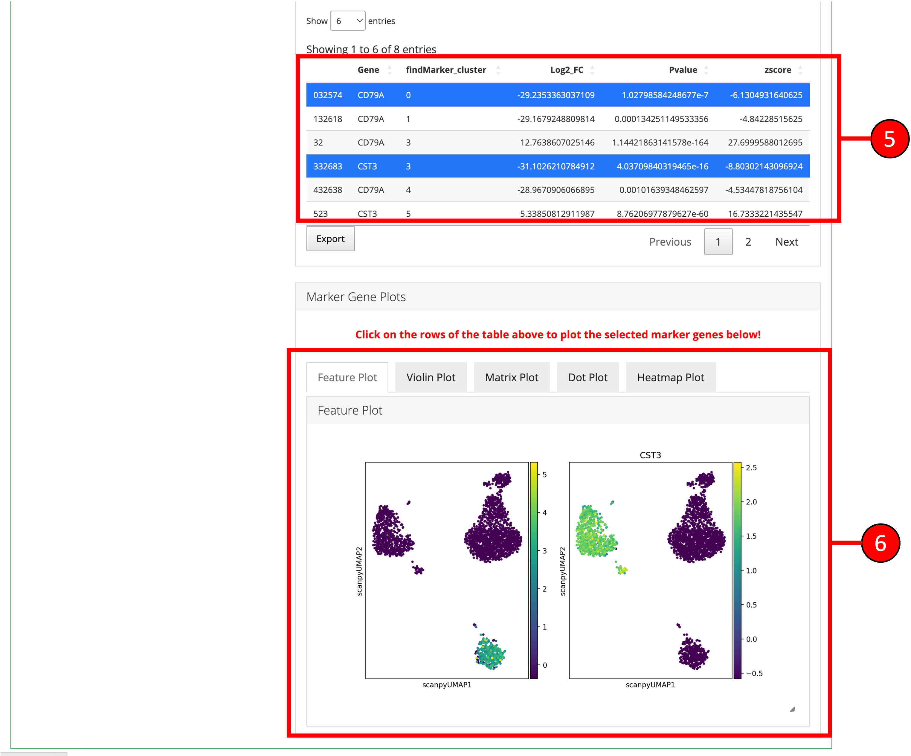
All methods Scanpy wrapper functions in singleCellTK take a
SingleCellExperiment (SCE) object as an input and will
return an SCE with additional information. For this tutorial, we will
use a small PBMC dataset that has been previously run through quality
control and has been filtered:
library(singleCellTK)
sce <- readRDS("tutorial_pbmc3k_qc.rds")1. Normalize Data
Once raw data is uploaded and
stored in a SingleCellExperiment object,
runScanpyNormalizeData() function can be used to normalize
the data. The method returns a SingleCellExperiment object
with normalized data stored as a new assay in the input object.
The main parameters to this function include useAssay
which is used to specify the assay with raw counts that should be
normalized and normAssayName which will be the name of the
new normalized assay to be created.
Note: The input raw counts matrix should only contained filtered cells and empty droplets should already have been removed. If you applied ambient RNA removal algorithms and want to use the decontominated counts, make sure to specify the appropriate matrix as input.
sce <- runScanpyNormalizeData(inSCE = sce, useAssay = "counts", normAssayName = "scanpyNormData")2. Scale Data
Normalized data can be scaled by
z-scoring with the runScanpyScaleData() function that takes
input a SingleCellExperiment object that has been
normalized previously by the runScanpyNormalizeData()
function. The scaled assay is stored back in the input object.
The main parameters to this function include useAssay
which is used to specify the normalized assay from previous steps and
scaledAssayName which will be the name of the new scaled
assay to be created.
sce <- runScanpyScaleData(inSCE = sce, useAssay = "scanpyNormData", scaledAssayName = "scanpyScaledData")3. Highly Variable Genes
Highly variable genes
can be identified by first using the runScanpyFindHVG()
function that computes that statistics against a selected HVG method in
the rowData of input object. The variable genes can be visualized using
the plotScanpyHVG() method.
The main parameters to this function include useAssay
which is used to specify the name of the input log normalized assay and
method which is used to specify the method to use for
computing the variability of each gene.
sce <- runScanpyFindHVG(inSCE = sce, useAssay = "scanpyNormData", method = "seurat", minMean = 0.0125, maxMean = 3, maxDisp = 0.5)By default, the runScanpyFindHVG function stores the
most highly variable genes in the rowData of the SCE object in a
variable called highly_variable. These genes can be
retrieved using the getTopHVG function:
## [1] "TNFRSF4" "CPSF3L" "ATAD3C" "RP11-345P4.10"
## [5] "RER1" "TNFRSF25"
plotScanpyHVG(sce)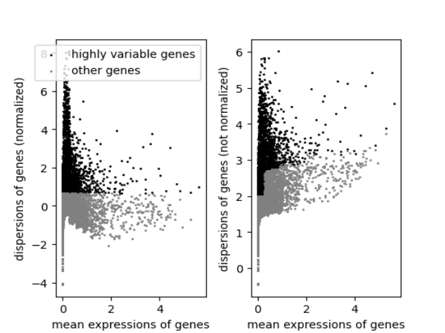
4. Dimensionality Reduction
PCA can be computed
using the runScanpyPCA() function.
The main parameters to this function include useAssay
which is used to specify the name of the input log normalized assay and
method which is used to specify the method to use for
computing the variability of each gene.
sce <- runScanpyPCA(inSCE = sce, useAssay = "scanpyScaledData", reducedDimName = "scanpyPCA", nPCs = 50, method = "auto", use_highly_variable = TRUE)The results of the PCA can be visualized in several ways. The
plotScanpyPCAVariance() function shows the percentage of
variability explained by each PC. This plot can be useful for selecting
the number of PCs. In general, the “elbow” of the curve is a good
selection criteria. The elbow is where there is a sharp drop in the
amount the percentage of variance decreases after including additional
PCs.
plotScanpyPCAVariance(inSCE = sce, nPCs = 50)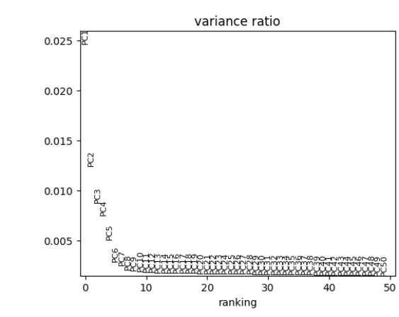
The plotScanpyPCA() function can be used to view cells
in the reduced dimensional space of PC1 versus PC2.
plotScanpyPCA(inSCE = sce, reducedDimName = "scanpyPCA")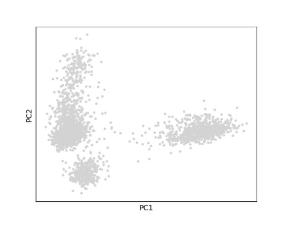
The plotScanpyPCAGeneRanking() function shows the
highest ranked genes for each PC.
plotScanpyPCAGeneRanking(inSCE = sce)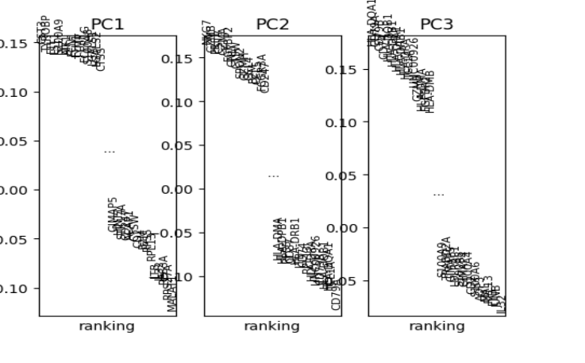
5. 2-D Embedding
The relationships between cells can be viewed on 2-D scatter plots
using embedding algorithms such as ‘UMAP’ and ‘tSNE’. In these plots,
each point is a cell and cells with more similar expression profiles
will be closer together in the plot. runScanpyTSNE() and
runScanpyUMAP() can be used to compute 2-D embeddings which
are stored in the reducedDim slot of the SCE object.
Parameters to both functions include useReducedDim which
specifies the reduced dimensional object to use as input,
reducedDimName which will be the name of this new
reduction, and dims which specifies the number of
dimensions to use from the reduced dimensional object. The
plotScanpyEmbedding() function can be used to visualize the
results. Below is an example of calculating and displaying a UMAP:
sce <- runScanpyUMAP(inSCE = sce, useReducedDim = "scanpyPCA", reducedDimName = "scanpyUMAP")
plotScanpyEmbedding(sce, reducedDimName = "scanpyUMAP")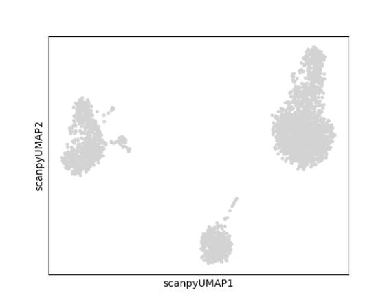
6. Clustering
The runScanpyFindClusters() function can be used to
cluster cells. The main parameters to this function include
useAssay which should be the name of the scaled assay,
useReducedDim useReducedDim which specifies
the reduced dimensional object to use as input, dims which
specifies the number of dimensions to use from the reduced dimensional
object, and method which specifies the clustering
method.
sce <- runScanpyFindClusters(inSCE = sce, useAssay = "scanpyScaledData", useReducedDim = "scanpyPCA", method = "leiden", resolution = 1, nNeighbors = 10, dims = 10, cor_method = "pearson")plotScanpyEmbedding() can then be used to plot the
cluster labels on the previously computed 2-D embeddings or reduced
dimensional objects. For example, we can plot the cluster labels on the
UMAP:
plotScanpyEmbedding(sce, reducedDimName = "scanpyUMAP", color = 'Scanpy_leiden_1')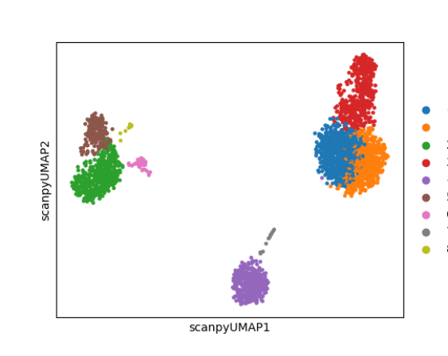
7. Find Markers
Marker genes can be identified
using the runScanpyFindMarkers() function. The main
parameter for this function is a vector of cluster/group labels that are
stored in the colData of the input SCE object. By default.
each cluster of cells will be compared to the rest of the cells in all
other clusters. Users can can find also find differentially expressed
genes between two clusters using the group1 and
group2 parameters. Generally, group labels defined by
clustering functions will be used as input. Here we will find markers
for the clusters we identified previously:
sce <- runScanpyFindMarkers(inSCE = sce, colDataName = "Scanpy_leiden_1", nGenes = 10, test = "t-test", corr_method = "benjamini-hochberg")The full table of differentially expressed marker genes can be
accessed in the metadata with the command
metadata(sce)[["scanpyMarkersTable"]]. Here are the first
few genes in the table:
## Gene findMarker_cluster Log2_FC Pvalue zscore
## 01 RPS12 0 0.8089651 2.093646e-105 25.08269
## 02 RPS25 0 0.8680546 6.748015e-95 23.33849
## 03 RPS6 0 0.7139596 2.935386e-91 23.30149
## 04 RPS27 0 0.7877940 2.479621e-88 22.71698
## 05 RPL31 0 0.8843585 2.715709e-83 21.65312
## 06 MALAT1 0 0.7837504 4.076034e-79 21.44774Expression of individual marker genes can be visualized in Feature plots, Dot plots, Violin plots, Matrix plots and via a Heatmap:
plotScanpyEmbedding(sce, color = c("CD79A", "CST3"), reducedDimName = "scanpyUMAP")
plotScanpyDotPlot(sce, features = c("CD79A", "CST3"), groupBy = "Scanpy_leiden_1")
plotScanpyViolin(sce, features = c("CD79A", "CST3"), groupBy = "Scanpy_leiden_1")
plotScanpyMatrixPlot(sce, features = c("CD79A", "CST3"), groupBy = "Scanpy_leiden_1")
plotScanpyHeatmap(sce, features = c("CD79A", "CST3"), groupBy = "Scanpy_leiden_1")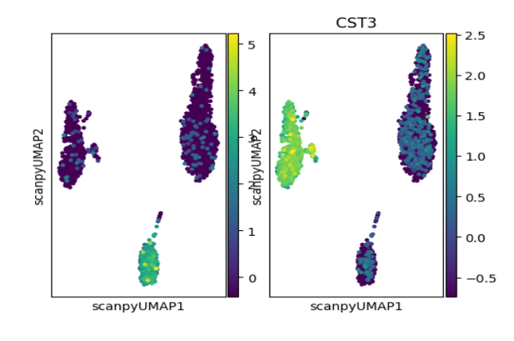
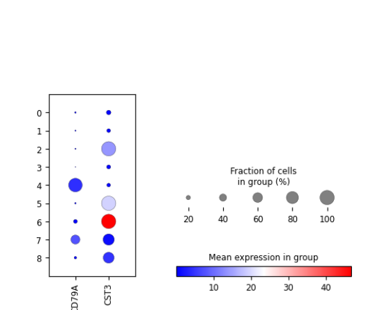
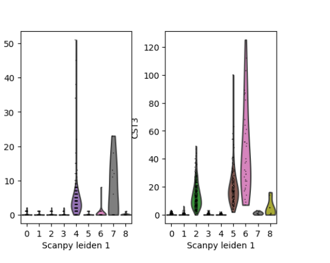
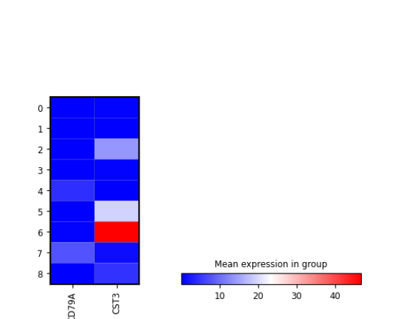
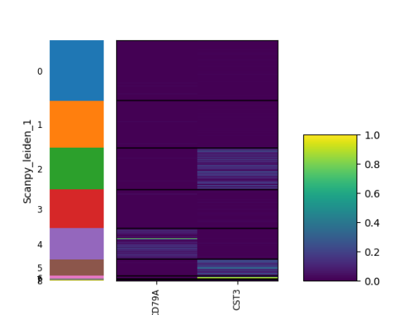